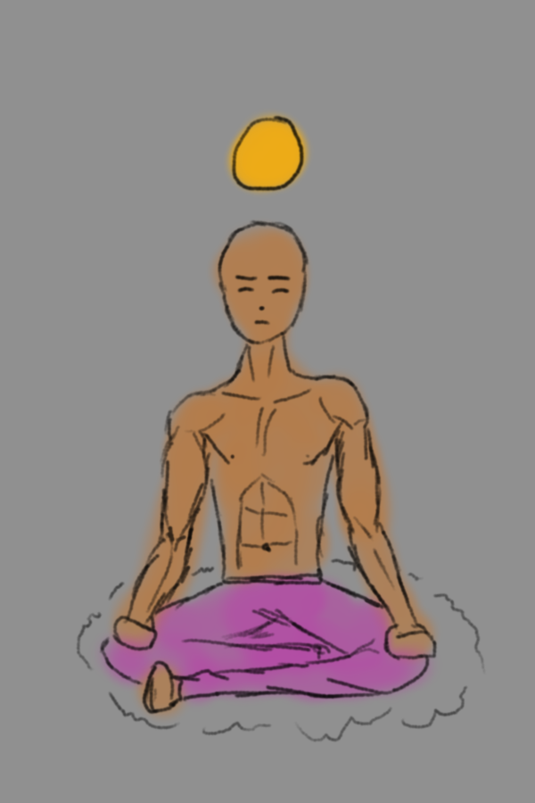
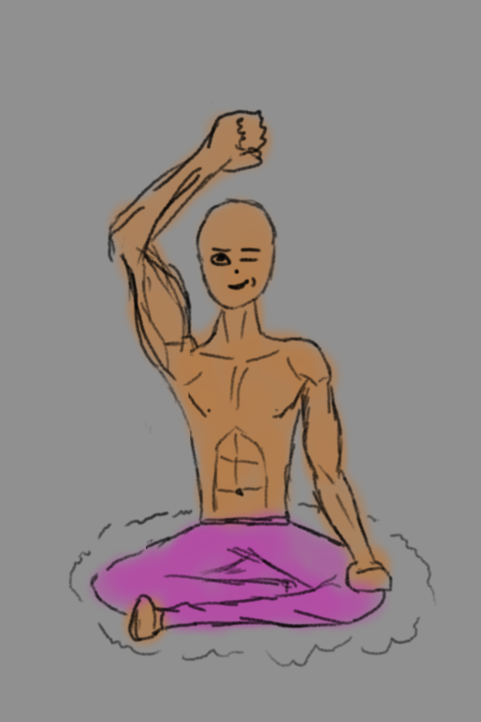
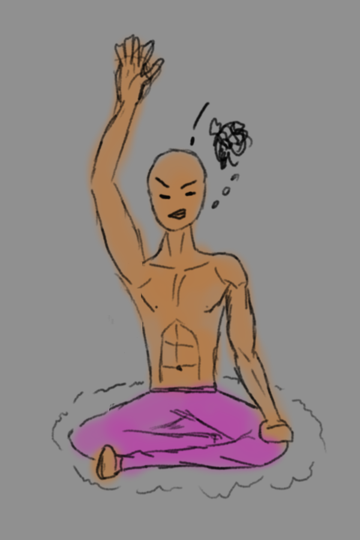

I like the idea of Melatonin. It's supposed to be a relaxing rythm based game to help you clear your mind and wind down to sleep. It has a bunch of mini games where you must use sound and visual ques to press buttons to a rhythm.
Instead of finding it relaxing I found it mostly frustrating. Which is the opposite effect I bought this game for. Even setting a bunch of modifiers to make it easier I still struggled to notice what I was doing wrong and understand the timing of things. Maybe I just have no sense of rythm. I struggled to know when went to start my inputs and since the patterns you are copying are rythm based, once you miss the first one you are garaunteed to miss the next.
I think this game could do with a very easy mode. I did use the sound que and easy perfects assist however I avoided the visuals telling you exactly when to press as that defeats the point of the game. I could see this being quite relaxing if these issues were cleared up or if you are just better at the game.
[To play the mini game, simply click the meditating man when the coin is in the yellow oura.]


